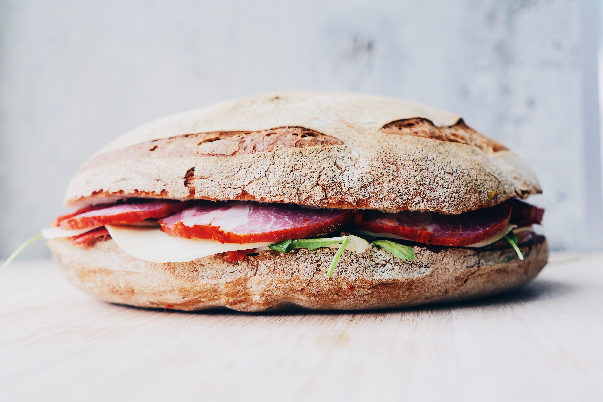

Follow Us

Follow us in order to get in on daily deals and special offers. It's also a great way to peek in on the daily happenings of the Mort's Crew!
Follow UsDeli
Visit us inside the store every morning to load up on one of several breakfast burritoes or sandwiches, or to take a warm beverage to go.
Deli